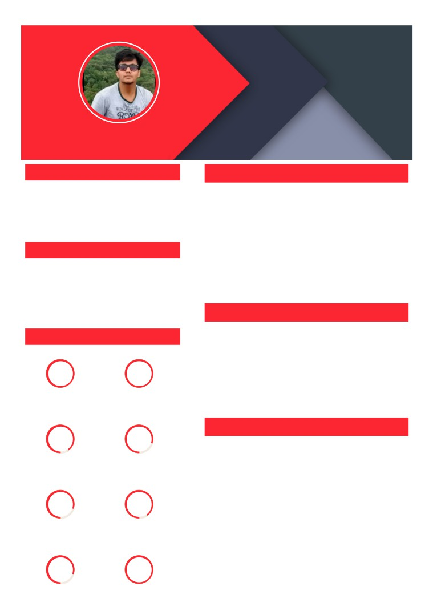
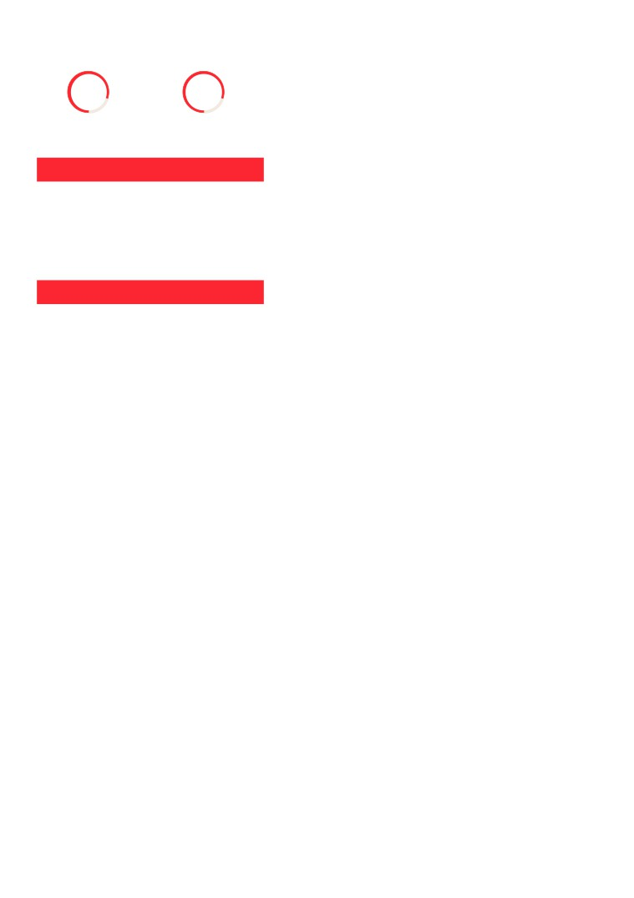

SIDDHARTH PACHORI
SENIOR SOFTWARE ENGINEER
CAREER OBJECTIVE
EDUCATION
5+ years experience with programming , technology
IT Projects Management - PG Diploma in
March 2021
engineering and bringing ideas to life. Innovating and
Management (HB)
automating them on a role of Software Designer or
Welingkar Institute of Management
Analyst with Company incorporating critical thinking,
problem solving, and leadership.
Bsc in Information Technology
2015
Mumbai University
66.7
CONTACT
HSC
2012
8879230591
Mumbai University
78.5
siddpachori@gmail.com
B-302, Violet Apartment-2, Kalyan West, Thane
, Maharashtra,
EXPERIENCE
March 2021 - Present
Senior Software Engineer
TECHNICAL SKILLS
Cimpress India
Senior Software Engineer
March 2019 - March 2021
Cybage Software Pune
100%
100%
Software Engineer
Sept 2015 - Feb 2019
Wipro Technologies
Vanilla Or Native
ReactJs With Redux(Thunk
Javascript/ES5/ES6/ES7/ES8
and Promise)(3 yrs)
DOM Manipulation (3.5
Yrs)
PROJECTS
90%
80%
Pens.com
March-2021 to Present
Apollo GraphQL (2 yrs)
HTML5 and CSS3 and
Pens.com is the social site of National Pen Company ®. Shop custom
above with FlexBox
promotional pens & business logo products for marketing, plus get deals &
coupons!
- Developing and enhancing main front end platform website.
80%
90%
- Developing new user-facing features.
- Designing and developing new front end applications for various platforms
Help out with front end work on other applications (JavaScript/CSS/Html).
Unit Testing by Jest (2 yrs)
Semantic HTML5 with
- Developing speci cations and designs for complex applications or
and Functional Testing by
bootstrap , CSS/LESS/SASS
modifying/maintaining complex existing applications.
Cypress
and Stylus with BEM (2
- Performing code analysis, requirements analysis, identi cation of code
Yrs)
metrics, system risk analysis and software reliability analysis.
- Performance tuning, improvement, balancing, usability, automation.
80%
100%
- Experience on Node.Js or React.Js . Hands on experience working under
MVC model.
- Building reusable code and libraries for future use.

BackboneJs, KnockoutJs (1
MVC Core with C# (1 yrs)
- Experience in front-end build tools/task runners like NPM, gulp, grunt,
yrs)
webpack. Hands on experience with ES6, HTML5, CSS3, CSS Preprocessors,
etc.
- Hands on experience with Material Designing concepts and Bootstrap
framework.
80%
80%
- Hands on experience of 3rd party integration of Reviews, Analytics.
In Depth Knowledge of JavaScript and JavaScript related libraries/framework.
- Experience with JavaScript Unit Testing frameworks.
Github(2 yrs)
.Net with Asp and Aspx,
- Ensuring the technical feasibility of UI/UX designs.
with WCF (2 yrs)
- Systems Development Life Cycle (SDLC) experience including Agile
implementation principles and practices Developing cross-browser and
cross-platform compatible solutions. Experience in working with version
INTERESTS
control systems such as SVN, GIT .
Fictiv.com
Work/Community Involvement
March-2019 to March-2021
Club Membership
Fictiv operates a manufacturing platform that enables users to design,
Travelling
develop and deliver fabricate parts. Its online interface enables customers to
Sports
get instant quotes, review manufacturing feedback, and manage orders
Art
from vendors. Fictiv’s platform enables users to leverage distributed
Gaming
manufacturing to fabricate parts through 3D printing and CNC machining. It
serves engineers, designers, creators, startups, hackers, and more.
PERSONAL PROFILE
Technologies:-
Date of Birth
01/07/1994
- ReactJs(16 and above) including hooks with Redux on the layer of Apollo
GraphQL with express.
Nationality
Indian
- Developing UI/UX using Ant Design with Antd and Ant-Mobile.
Marital Status
Single
- GraphQL with NodeJs, de ning models of tables, schemas which acts as
intermediate between the resolvers and db(postgreSQL).
English(UK,US), Hindi,
Known Languages
- Writing durable unit test cases using Jest both for React and GraphQL.
German , French
- Utilizing AWS on infrastructure level for CICD on this project gave me a
insight of IAAS and PAAS which culminates from aws-amplify, codebuild, S3
and elastic beanstalk.
- Through Cypress Contributed in creating integration regression test cases
and artifacts which were useful in validating various use cases of application
and it's durability.
- UI Components Designing & Application Interface Coding.
- Identi ed web-based user interactions and developed highly-responsive
user. interface components via React concepts
- Translated designs & wireframes into high-quality code and wrote
application interface code via JavaScript following React.js work ows.
- Code Debugging & Front-end Architecture .
- Troubleshot interface software and debugged application codes to improve
functionality and performance by 50%.
- Developed and implemented front-end architecture to support user
interface concepts with 100% accuracy.
- Performance Optimization & Features Development.
- Monitored and improved front-end performance by 15% and documented
application changes & worked on updates.
- Developed the latest user-facing features using React.js and built reusable
components & front-end libraries for future use.
- Optimized components for maximum performance across a vast array of
web-capable devices and browsers.
- Application Development & UI Designing
Coordinated with the development team of 12 to discuss user interface
ideas and applications.
- Reviewed application requirements and interface designs to ensure
compatibility with existing applications
Roles and Responsibilities:-
- Write technical documentation layering out the conceptual view of it.
- Work with development teams and product managers to ideate software
solutions.
- Design web-apps client-side and server-side architecture.
- Develop and manage well-functioning databases and applications.
- Create security and data protection settings.
- Build features with a mobile responsive design.
- Approve the scope of works, the plan and the target cost for each element
of a project.
- Achieving stated project objectives and setting clean attainable motives.
- Create stories with discussion with clients using Atlassian products and laid
out estimation on iterative cycle of development.
Bench Management System
April-2018 to Jan-2019
Internal Project designed for Wipro as a medium to manage resources who
are in current bench or pool and are ready to be deployed in projects.
Managers can take di erent assignment actions on current pools, who can
allocate resources, can provide segmented feedback ,can also allocate to
their own individual projects if the requirements were t perfectly.
Technologies:-
- ReactJs With Materialized View.
- Redux-Thunk.
- Testing Utility with Jasmine for React.
- Backend developed using MVC core with C# with endpoints as of WebApi
2.0.
- xUnit utility for MVC core
- Deployment and maintenance done using Azure Cloud.
- Webpage Designing & Optimization
Determined the structure and design of web pages based on user
requirements and balanced functional & aesthetic designs.
- Created features to enhance the user experience while ensuring that the
web design is optimized for smartphones
Employed a variety of languages such as HTML and CSS to write & create
user-friendly web pages.
- Coding & Website Improvement.
- Built reusable code for future use and optimized web pages for 5
applications for maximum speed and scalability
- Managed brand consistency throughout the design and maintained &
improved the company's website by adding more features and functionality.
- Produced high-quality mockups & designed di erent prototypes and
provided high-quality graphics & visual elements.
Roles & Responsibilities:-
- Seek to enhance the user experience by creating seamless navigation
through various digital programs and interfaces within the company.
- Combine interface design concepts with digital design and establish
milestones to encourage co-operation and teamwork.
- Develop overall concepts for improving the user experience within a
business webpage or product , ensuring all interactions are intuitive and
convenient for users.
- Collaborate with back-end web developers and programmers to improve
usability.
PROTOTYPE IDEATE
Oct-2017 to Mar-2018
The Ideate tool could be de ned as a well structured managing system
where users can log their ideas i.e ideas could be anything from automating
batches to your con gurable items which does not require more human
tasks on it. Users would log their ideas onto their account , the user's ideas
could be shareable with other team members after user submit his ideas to
the system. After submitting the ideas the user would require their line
manager's approval to actually implement their idea.Lastly users would
close the idea and gain more points for their ideas.
Roles & Responsibilities:-
- Develop UI mockups and prototypes and clearly illustrate how sites
function and look like.
- Illustrate design ideas using storyboards , process ows and sitemaps.
- Design graphic user interface elements , like menus , tabs and widgets.
- Collaborate with other developers and engineers to design, build and
maintain applications.
- Build applications for various platforms using common frameworks,
including .Net.
- Determining operational practicality and developing quality assurance
procedures.
Technologies:-
- ReactJs
- Material design storybook.
- MVC 4.5 with razor pages.
Resource Provisioning System -MyAccess(Credit Suisse)
Oct-2015 to Sept-2017
A resource provisioning System, designed as a web based tool.This tool
allowed to submit a request package to the host system and approval
workow is created for the request.A transacted environment in accordance
with dierent physical and virtual approvers who would be liable to approve
and countenanced request for a successful completion. This application also
provides a medium to user for accessing temporary privilege access ,for
which user needs to a form mentioning their requirement and for which
region and area's system they want the access.
In this project I acted as Software programmer and maintainer. Enhanced
functionalities in this project like adding a security mechanism using
Encryption ,serializing and SOAP techniques.
I started my career as a junior developer on this project in which my work
consisted of developing and maintaining the services created using WCF and
web services which were co-inclined with SQL server. It also aligned with
understanding client's requirements and laying out ideas and providing
better automated way to let the application be more exible.
Key Responsibilities
- Create technical speci cations
- Write systems to control the scheduling of jobs or to control the access
allowed to users or remote systems.
- Write operational documentation with technical authors.
- Maintain systems by monitoring and correcting software defects work
closely with other sta
, such as project managers, graphic artists, UX
designers, other developers, systems analysts and sales and marketing
professionals.
- Consult clients and colleagues concerning the maintenance and
performance of software systems, with a view to writing or modifying
current operating systems.
- Investigate new technologies continually update technical knowledge and
skills by attending in-house and external courses, reading manuals and
accessing new application.
Technologies
- Asp, Aspx.net, MVC using CFA.
- WCF and web sevices.
- MVC 4 and above.
- SOAP with endpoint selection.
- SQL server 2008, 12 , 14.
- Sybase.
PERSONAL STRENGTHS
My strength is my exibility to handle change. As software developer at my
last job, I was able to turn around a negative working environment and
develop a very supportive team. As far as weaknesses, I feel that my
management skills could be stronger, and I am constantly working to
improve them.
DECLARATION
I hereby declare that all the information contained in this resume is in accordance with facts or truths to my knowledge. I take full
responsibility for the correctness of the said information.
Place :
Mumbai
Date :
10th
January
2020
Siddharth Pachori